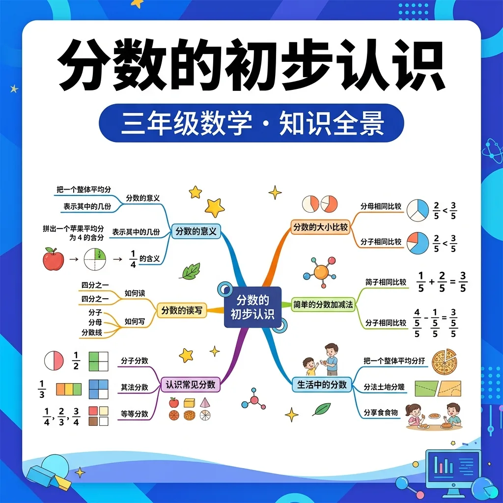
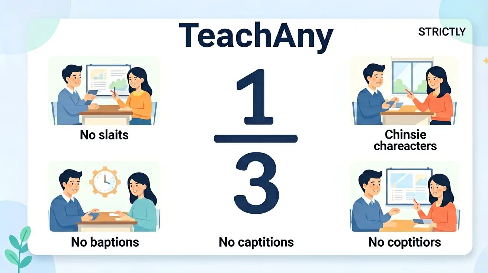

❓ 为什么披萨要切成8块而不是1块？
❓ 分数上面的数和下面的数到底谁大？
❓ 半个苹果和四分之一个苹果哪个更大？
学完这一课，这些问题你都能自信地回答。
🎯 能说出分数的基本组成部分（分子、分母、分数线）
🎯 能判断同分母分数的大小关系
🎯 能分析简单生活场景中的分数含义
✨ 从分披萨开始，认识神奇的分数！

🌍 And（已知）：我们已经学会了整数的加减法
⚡ But（问题）：但如何表示"半个苹果"这样不完整的数量？
💡 Therefore（新知）：因此我们需要学习分数，它能帮助我们精确描述部分与整体的关系
学习前先测一测，了解你的起点 ✨
1. 下面哪个说法是正确的？
2. 你觉得学好这个知识最重要的是？
把一块饼干平均分成2份，每份就是这块饼干的 1/2（二分之一）。
把一个苹果平均分成4份，每份就是 1/4（四分之一）。
分数就是"把一个整体平均分"的结果！
分子（取了几份）
— 分数线（表示平均分）
分母（平均分成几份）
把一个整体平均分成若干份，取其中的一份或几份，用分数来表示。
⚠️ 必须是"平均分"！
同分母：分子大的分数大
同分子：分母小的分数大
分母越大，每份越小！
🎯 把图形对应的分数配对！
分数
描述
分子上下要记牢，分子分母搞清楚；分子比分母小是真分数，分子不小于分母是假分数
和前测对比一下，看看你进步了多少！ 🚀
1. 学完本节课，你最大的收获是？
2. 如果让你把这个知识教给同学，你能做到吗？
💡 常见错误往往就在细节中，仔细检查每一步！
回忆：今天学了哪些关键词和规则？试着说出来。
用自己的话解释今天学的核心概念，不看书能说清楚吗？
用今天的知识解决一个实际问题，或写一个新例子。
把今天的知识与已有知识联系起来：有什么共同点？有什么区别？能不能自己创造一道新题？
1. 你见过哪些标有分数的物品？2. 如果把一个蛋糕分成 6 块，吃 2 块怎么用分数表示？3. 1/2 和 1/3 哪个更大？为什么？
1. 用图形表示 5/6；2. 比较 3/7 和 4/9 的大小；3. 计算：2/9 + 5/9
常见错因：1) 误区：认为分母大的分数值一定大（如觉得 1/5＞1/4）；诊断：未理解分母表示总份数。2) 误区：比较分数时只看分子或分母单一数字；诊断：缺乏系统比较方法。需通过等分实物操作纠正错误认知。
迁移任务：设计一个分披萨的活动方案，要求 1) 分析 3 人平分 2 个披萨时每人所得；2) 探究不同分法（如一个分 4 块、一个分 8 块）对分配结果的影响。
先独立作答，再点选项查看对错与错因。
将一个圆形披萨平均分成4份，每份占整个披萨的多少？
如果把一个长方形蛋糕平均分成8份，3份占整个蛋糕的多少？
下列哪个分数表示将一个整体平均分成5份，取了其中的2份？
将一个圆形饼干平均分成6份，每份是____。
答案：1/6
整个饼干被平均分成6份，每份就是1/6
把一块长方形巧克力平均分成12份，5份占整个巧克力的____。
答案：5/12
整个巧克力被平均分成12份，5份就是5/12
关于分数的理解，下列哪项是正确的？
准备一张圆形纸片和一张长方形纸片，分别将它们平均分成不同份数
像拆礼物一样分开分子分母，分子是得到的部分，分母是总份数
分数线就像切蛋糕的刀，把整体平均分成若干份
同分母比分子大小，就像比谁拿的披萨片数多
用折纸演示1/2＞1/4的视觉对比
用分糖果理解3/4表示3人分4颗糖每人得多少
✅ 用相同大小的圆对比阴影面积
💡 只关注分母数字大小
✅ 强调'先分后取'的口诀
💡 未理解分母表示平均分的总份数
口诀：上分子下分母，分数线在中间站
类比：分数就像切西瓜，分母是切几刀，分子是吃几牙
And：学生已掌握整数加减法
But：如何表示比1小的量？
Therefore：引入分数表示部分与整体关系
分数就像切蛋糕！分母表示切几块（比如2等分），分子表示拿几块（比如拿1块）。举个栗子：妈妈把月饼切成4块，小明吃了1块，就用分数1/4表示。注意哦，切的大小要一样才公平～
🌍 看！披萨被切成8片，爸爸吃了3片就是3/8，妹妹吃了1片就是1/8，剩下的4/8要留给妈妈呢！
把西瓜分成5块，吃了2块怎么表示？
And：已会用分数表示部分量
But：1/2和1/3哪个更大？
Therefore：掌握同分子分数的比较方法
当分子都是1时，分母越小分数越大！就像分糖果：1/2表示2人分1颗糖（每人半颗），1/3表示3人分1颗糖（每人更少）。所以1/2 > 1/3！记住口诀：分母大，分数小；分母小，分数大。
🌍 运动会发矿泉水：第一组3人分1瓶（每人1/3瓶），第二组5人分1瓶（每人1/5瓶），哪组每人喝得多？当然是1/3瓶的组啦！
比较1/4和1/6的大小
